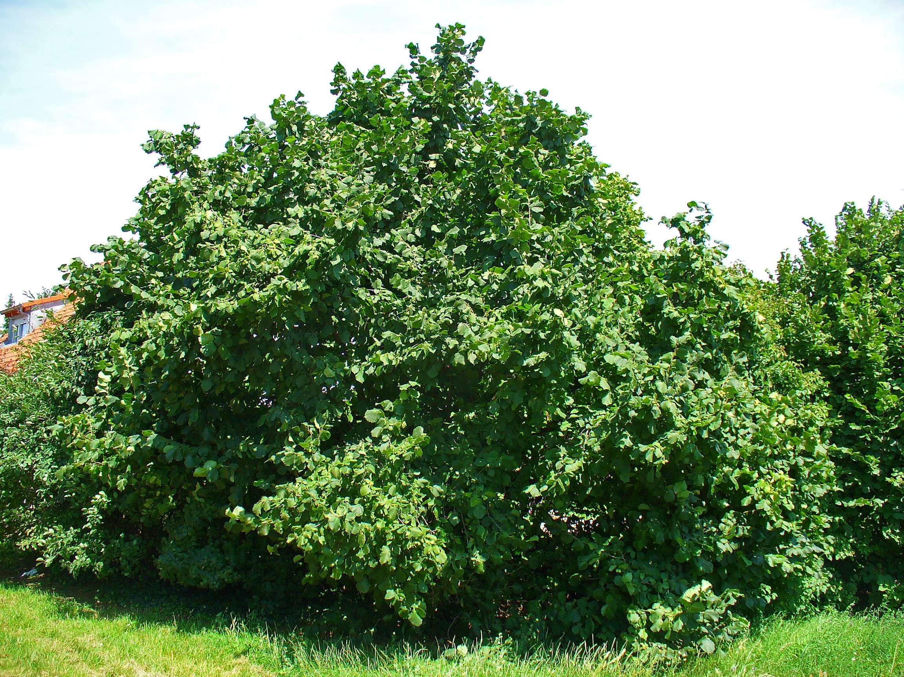

Corylus — Hazel (Corylus)
A scrappy, unkillable underdog who keeps coming back stronger every time you cut her down — coppicing is not death, it's a power move.
Combat flavor
Hazel's coppice resilience is the defining mechanic hook — a low-HP support unit that regenerates hitpoints or revives after defeat, weaker wood making it fast but not heavy-hitting. Nut-drop could function as an area food-buff for allied units.
Real-world facts
Typical / max height3–6 m typical (shrub/multi-stem); Turkish hazel (C. colurna) up to 35 m
Lifespan70–80 years uncoppiced; potentially several hundred years when coppiced regularly
Wood~517 kg/m³ air-dry density — comparable to pine/spruce, relatively light and flexible
Growth speedmedium (30–60 cm/yr)
Ecology / notable traitsCoppice champion — regenerates vigorously from cut stump; mast crop (hazelnuts) critical for dormice, squirrels, and birds; important early-spring pollen source; no thorns; traditional coppice cycles of 7–15 years; common across European woodland understory
Gallery
